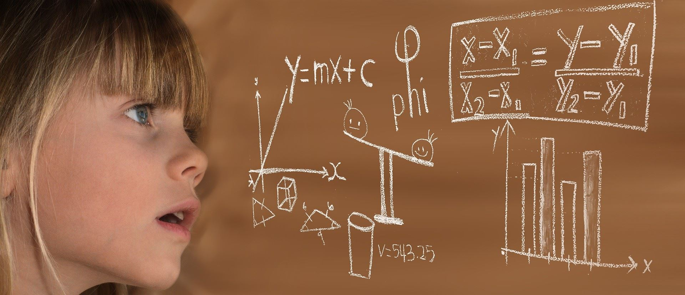
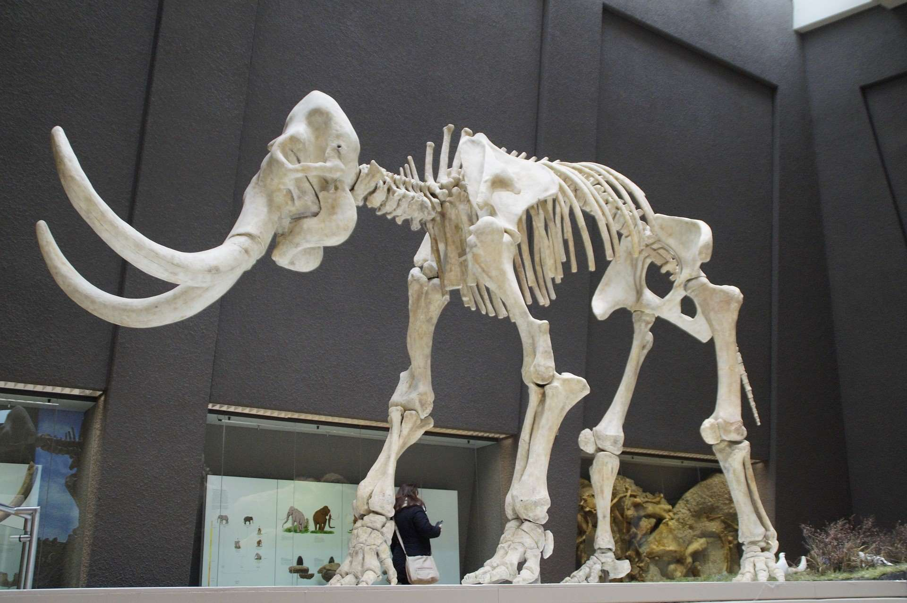

For kids
Are you a young person looking to learn more about science? Come on down to our museum, there's plenty to see and do.
You can learn about Newtonian physics from our bumper swing, or why not travel back in time and meet our resident Woolly Mammoth? Our exhibits are designed to be accessible for interested minds, so make sure you come ready to learn and explore.
Young Stars Club
We also have the Young Stars club which meets once a week on a Saturday between 10:00 and 13:00 where you'll get to explore and experiment with our team of experts. It's open to all, ages 7-15.
During the school holidays we run special holiday clubs where you can join other children your age to go on a journey of discovery. Each holiday we pick a new theme to explore. To find out more about the holiday club and how you can join, send us a message.